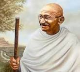

Mohandas Karamchand Gandhi, more famously known as Mahatma Gandhi, was a pivotal figure in India's struggle for independence. His philosophy of nonviolent resistance, or Satyagraha, inspired millions and ultimately led to India's freedom from British rule. I deeply admire Gandhi for his unwavering commitment to peace, his profound wisdom, and his extraordinary leadership.
Gandhi's life was a testament to the power of nonviolence. He believed that even the most oppressive regimes could be challenged through peaceful means. He organized mass protests, boycotts, and civil disobedience movements, all while adhering to the principles of Satyagraha. His courage in the face of adversity and his unwavering faith in the power of truth and love are truly inspiring.
Gandhi's teachings extend far beyond the realm of politics. He emphasized the importance of simple living, self-reliance, and ethical conduct. He believed that true freedom could only be achieved through inner transformation. His words and actions continue to resonate with people around the world, offering guidance on how to live a more meaningful and fulfilling life.
"Be the change that you wish to see in the world." This famous quote by Gandhi encapsulates his philosophy of personal and social transformation. He believed that each individual has the power to make a difference, and that true change begins within.
"Non-violence is not a garment to be put on and off at will. Its seat is in the heart."
Mahatma Gandhi's legacy is one of peace, love, and social justice. He showed the world that even the mightiest empires can be brought down through nonviolent means. He is a true icon, a role model, and an inspiration to millions.